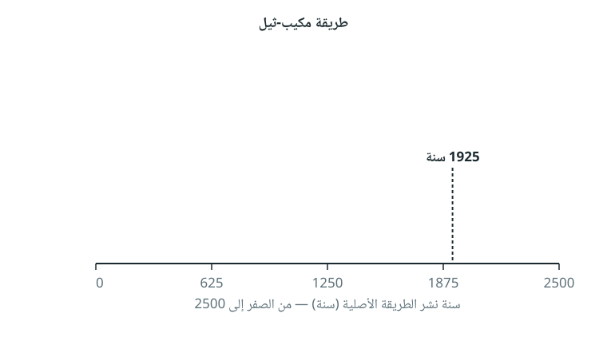

طريقة مكيب-ثيل
McCabe-Thiele method
طريقة بيانية لتقدير عدد الأطباق النظرية في تقطير ثنائي، تزاوج بين منحنى الاتزان وخطوط التشغيل بدرجات متعاقبة على مخطط y–x.
طريقة مكيب-ثيل طريقة بيانية قدّمها وارن مكيب وإرنست ثيل سنة 1925 لتقدير عدد الأطباق النظرية اللازمة لفصل مخلوط ثنائي في برج تقطير مستمر. تُرسم على مخطط إحداثياته الأفقية التركيب المولي السائل x والرأسية التركيب المولي البخار y، وفيه منحنى الاتزان الذي يربط بين تركيبي الطورين الخارجين من طبق مثالي، والقطر y = x كخط مرجعي لا كمنحنى اتزان. ويُضاف إلى المنحنى خط تشغيل للقسم العلوي يمر بـ(xD, xD) وميله R/(R+1)، وخط تشغيل للقسم السفلي يمر بـ(xB, xB)، وخط تغذية ميله q/(q−1) يمر بـ(zF, zF). تلتقي الخطوط الثلاثة في نقطة واحدة هي موضع طبق التغذية. ثم تُرسم درجات متعاقبة: أفقيًا من خط التشغيل إلى منحنى الاتزان، ورأسيًا من المنحنى إلى خط التشغيل، حتى بلوغ xB. كل درجة تساوي طبقًا نظريًا واحدًا. وتقوم الطريقة على تقريب التدفق المولي الثابت داخل كل قسم، وعلى معرفة بيانات الاتزان عند ضغط التشغيل. ومخرَجها عدد أطباق نظرية لا أطباقًا حقيقية: التحويل إلى أطباق فعلية يحتاج كفاءة طبق، والتحويل إلى حشوة يحتاج ارتفاعًا مكافئًا لطبق نظري.
كيف تعمل الظاهرة؟
الآلية تناوب بين علاقتين مختلفتين الطبيعة. منحنى الاتزان يصف تركيبَي الطورين الخارجين من طبق مثالي في حالة اتزان، أي أنه علاقة طورية. وخط التشغيل يصف موازنة مادية لمكوّن بين تيارين متقابلين في البرج، أي أنه علاقة كتلية. تبدأ الدرجة من نقطة على خط التشغيل تمثل بخارًا صاعدًا، فيُقرأ من المنحنى التركيب السائل المتزن معه (انتقال أفقي)، ثم يُقرأ من خط التشغيل التركيب البخاري الصاعد من الطبق التالي (انتقال رأسي). تكرار التناوب ينقل التركيب من xD إلى xB، وعدد الأزواج هو عدد الأطباق النظرية. وموضع طبق التغذية هو الدرجة التي تحتوي نقطة تقاطع الخطين مع خط التغذية.
العلاقة بالأرقام
خط التشغيل العلوي: y = [R/(R+1)]x + xD/(R+1)، وميله R/(R+1) لا R. وخط التغذية: y = [q/(q−1)]x − zF/(q−1)، حيث q = (Ls − L)/F. في المثال التوضيحي: F = 100 kmol/h وzF = 0.50 وxD = 0.90 وxB = 0.10 وR = 2، فيكون D = B = 50 kmol/h وL = 100 وV = 150 kmol/h، والخط العلوي y = (2/3)x + 0.30، والخط السفلي y = (4/3)x − 1/30، وتقاطعهما مع خط التغذية الرأسي عند x = 0.50 هو (0.50، 0.633). وتُقرأ النتيجة في تطبيق منشور: 17 طبقًا نظريًا وارتفاع مكافئ 35 cm يعطيان نحو 6 m من الحشوة.
مفاهيم متقاربة
التمييز الأول: الطبق النظري ليس طبقًا حقيقيًا؛ الأول يفترض اتزانًا تامًا بين الطورين الخارجين، والثاني لا يبلغه، ولذلك تُقسم الأطباق النظرية على كفاءة متوسطة. التمييز الثاني: الخط المستقيم لا يعني مخلوطًا مثاليًا؛ التقريب هو ثبات التدفق المولي داخل القسم، وقد يكون منحنى الاتزان غير مثالي مع بقاء الخطوط مستقيمة. التمييز الثالث: نقطة على خط التشغيل ليست حالة اتزان، بل حالة تيارين متقابلين. التمييز الرابع: اصطلاح العدّ يختلف — هل يشمل المُبخِّر والمكثّف — فيجب التصريح به قبل مقارنة نتيجتين.
حدود التطبيق
الطريقة تفترض ثبات التدفق المولي داخل كل قسم، وهو تقريب يقوم على تقارب حرارات التبخّر وإهمال الفقد الحراري وحرارة الخلط. وهي ثنائية التركيب، وتُستخدم للمخاليط المتعددة كمقدّمة فقط. ولا تعطي قطرًا ولا حملًا ولا ارتفاعًا. ولا تتجاوز حدّ الأزيوتروب: تقترب الدرجات من الصفر عند التركيب الأزيوتروبي ولا تعبره. وتقلّ دقتها إذا كانت المتطايرية النسبية قريبة من الواحد أو كبيرة جدًا، أو إذا زاد العدد المطلوب عن حدود الاستعمال العملي.

| الكمية | القيمة | المصدر |
|---|---|---|
| سنة نشر الطريقة الأصلية | 1925 سنة | [1] |
| ميل خط التشغيل العلوي في مثال الموازنة التوضيحي | 0.667 بلا بُعد | [2] |
| التدفق البخاري العلوي في مثال الموازنة التوضيحي | 150 kmol/h | [2] |
| عدد الأطباق النظرية في تطبيق منشور على نظام تقطير مبرد | 17 طبق نظري | [2] |
المصادر
- 1 Graphical Design of Fractionating Columns — Industrial & Engineering Chemistry (ACS) (1925). wwwcourses.sens.buffalo.edu/ce407/notes/ce407_notes_binary_distillation_McCabe_Thiele_1925.pdf · اطُّلع عليه 2026-11-28
- 2 McCabe-Thiele Method: Stages and Model Checks — CASRAI (2026). casrai.org/guides/mccabe-thiele-method · اطُّلع عليه 2026-11-28
- 3 Binary distillation: McCabe Thiele method (M. Fermeglia) — University of Trieste — Separation Processes (2021). moodle2.units.it/pluginfile.php/391702/mod_resource/content/5/03_Distillation-Binary-McCabe.pdf · اطُّلع عليه 2026-11-28
استشهد بهذا المصطلح
الصيغتان مبنيتان من بيانات الصفحة نفسها: العنوان والتاريخ ورابط النسخة المنشورة.
طريقة مكيب-ثيل — McCabe-Thiele method. (2026). ديوان المعرفة — انفراد. https://infiradev.com/diwan/terms/term-mccabe-thiele-method.html
@misc{term-mccabe-thiele-method2026,
title = {طريقة مكيب-ثيل},
titleaddon = {McCabe-Thiele method},
howpublished = {{ديوان المعرفة — انفراد} — مرجع علمي عربي},
year = {2026},
url = {https://infiradev.com/diwan/terms/term-mccabe-thiele-method.html},
urldate = {2026-11-28},
note = {مراجعة علمية: Abdullah Al-Huwaidi}
}
راجعه: Abdullah Al-Huwaidi · 2026-11-28 · آخر تحديث 2026-11-28